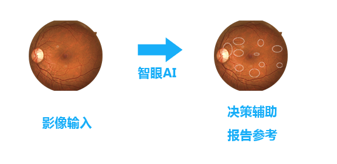

-

惨痛的事实：眼底病现状
注意眼底病变人工智能筛查系统是本公司即将推出的第一个基于人工智能的医疗影像处理系统。众所周知，我国有超过1亿的糖尿病患者，而且随着大家生活水平的提高及个人健康意识的薄弱，每年还有数百万的新增糖尿病患者。糖尿病属于慢性疾病，目前还没有根治的办法，而且随着病程的不断累积，会逐渐引起各种并发症，而糖尿病引起的眼科并发症由于其带来的危害巨大，所以，逐步引起大家的
-
糖尿病患者失明最主要原因之一
糖尿病视网膜病变（以下简称糖网）是糖尿病患者失明最主要的原因之一，但在病变早期，一般无眼部自觉症状，所以往往不容易引起大家的注意，随着病情发展，则可出现不同程度的视力障碍、视物变形、眼前黑影飘动和视野缺损等症状，最终导致失明。一般而言，病程〈 10年者，其患病率为7.0%；病程10～14年者，其患病率为25.0%左右；病程 〉15年者，患病率可高达为60.0%以上，而病程 〉30年者患病率为95.0%。如下图所示，左边为正常的视网膜彩照，右边则是由于罹患糖尿病而引起的视网膜出血的眼底照片。
-
糖尿病患者失明最主要原因之一
糖尿病视网膜病变（以下简称糖网）是糖尿病患者失明最主要的原因之一，但在病变早期，一般无眼部自觉症状，所以往往不容易引起大家的注意，随着病情发展，则可出现不同程度的视力障碍、视物变形、眼前黑影飘动和视野缺损等症状，最终导致失明。一般而言，病程〈 10年者，其患病率为7.0%；病程10～14年者，其患病率为25.0%左右；病程 〉15年者，患病率可高达为60.0%以上，而病程 〉30年者患病率为95.0%。如下图所示，左边为正常的视网膜彩照，右边则是由于罹患糖尿病而引起的视网膜出血的眼底照片。